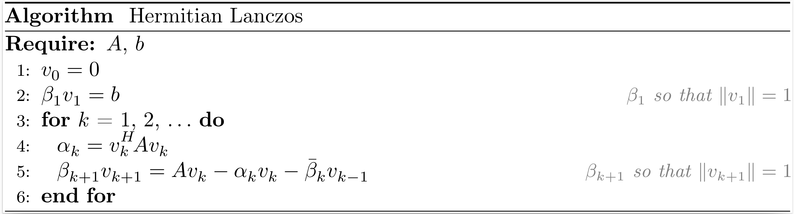
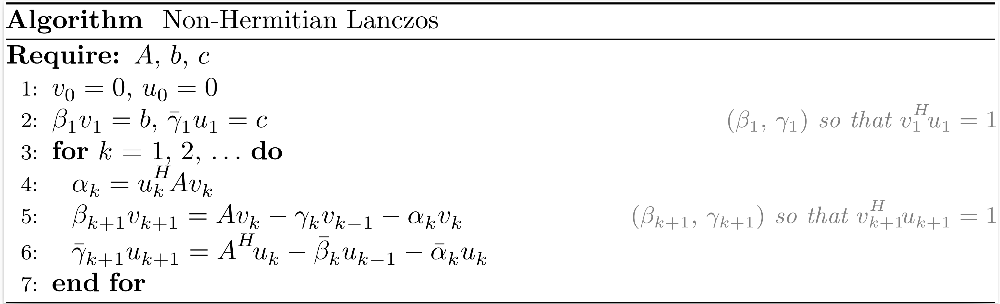

Krylov processes
Krylov processes are the foundation of Krylov methods, they generate bases of Krylov subspaces. Depending on the Krylov subspaces generated, Krylov processes are more or less specialized for a subset of linear problems. The following table summarizes the most relevant processes for each linear problem.
| Linear problems | Processes |
|---|---|
| Hermitian linear systems | Hermitian Lanczos |
| Square Non-Hermitian linear systems | Non-Hermitian Lanczos – Arnoldi |
| Least-squares problems | Golub-Kahan – Saunders-Simon-Yip |
| Least-norm problems | Golub-Kahan – Saunders-Simon-Yip |
| Saddle-point and Hermitian quasi-definite systems | Golub-Kahan – Saunders-Simon-Yip |
| Generalized saddle-point and non-Hermitian partitioned systems | Montoison-Orban |
Notation
For a matrix $A$, $A^H$ denotes the conjugate transpose of $A$. It coincides with $A^T$, the transpose of $A$, for real matrices. Define $V_k := \begin{bmatrix} v_1 & \ldots & v_k \end{bmatrix} \enspace$ and $\enspace U_k := \begin{bmatrix} u_1 & \ldots & u_k \end{bmatrix}$.
For a matrix $C \in \mathbb{C}^{n \times n}$ and a vector $t \in \mathbb{C}^{n}$, the $k$-th Krylov subspace generated by $C$ and $t$ is
\[\mathcal{K}_k(C, t) := \left\{\sum_{i=0}^{k-1} \omega_i C^i t \, \middle \vert \, \omega_i \in \mathbb{C},~0 \le i \le k-1 \right\}.\]
For matrices $C \in \mathbb{C}^{n \times n} \enspace$ and $\enspace T \in \mathbb{C}^{n \times p}$, the $k$-th block Krylov subspace generated by $C$ and $T$ is
\[\mathcal{K}_k^{\square}(C, T) := \left\{\sum_{i=0}^{k-1} C^i T \, \Omega_i \, \middle \vert \, \Omega_i \in \mathbb{C}^{p \times p},~0 \le i \le k-1 \right\}.\]
Hermitian Lanczos

After $k$ iterations of the Hermitian Lanczos process, the situation may be summarized as
\[\begin{align*} A V_k &= V_k T_k + \beta_{k+1,k} v_{k+1} e_k^T = V_{k+1} T_{k+1,k}, \\ V_k^H V_k &= I_k, \end{align*}\]
where $V_k$ is an orthonormal basis of the Krylov subspace $\mathcal{K}_k (A,b)$,
\[T_k = \begin{bmatrix} \alpha_1 & \beta_2 & & \\ \beta_2 & \alpha_2 & \ddots & \\ & \ddots & \ddots & \beta_k \\ & & \beta_k & \alpha_k \end{bmatrix} , \qquad T_{k+1,k} = \begin{bmatrix} T_{k} \\ \beta_{k+1} e_{k}^T \end{bmatrix}.\]
Note that $T_{k+1,k}$ is a real tridiagonal matrix even if $A$ is a complex matrix.
The function hermitian_lanczos returns $V_{k+1}$ and $T_{k+1,k}$.
Related methods: SYMMLQ, CG, CR, MINRES, MINRES-QLP, CGLS, CRLS, CGNE, CRMR, CG-LANCZOS and CG-LANCZOS-SHIFT.
Krylov.hermitian_lanczos — FunctionV, T = hermitian_lanczos(A, b, k)Input arguments
A: a linear operator that models a Hermitian matrix of dimension n;b: a vector of length n;k: the number of iterations of the Hermitian Lanczos process.
Output arguments
V: a dense n × (k+1) matrix;T: a sparse (k+1) × k tridiagonal matrix.
Reference
- C. Lanczos, An Iteration Method for the Solution of the Eigenvalue Problem of Linear Differential and Integral Operators, Journal of Research of the National Bureau of Standards, 45(4), pp. 225–280, 1950.
Non-Hermitian Lanczos

After $k$ iterations of the non-Hermitian Lanczos process (also named the Lanczos biorthogonalization process), the situation may be summarized as
\[\begin{align*} A V_k &= V_k T_k + \beta_{k+1} v_{k+1} e_k^T = V_{k+1} T_{k+1,k}, \\ A^H U_k &= U_k T_k^H + \bar{\gamma}_{k+1} u_{k+1} e_k^T = U_{k+1} T_{k,k+1}^H, \\ V_k^H U_k &= U_k^H V_k = I_k, \end{align*}\]
where $V_k$ and $U_k$ are bases of the Krylov subspaces $\mathcal{K}_k (A,b)$ and $\mathcal{K}_k (A^H,c)$, respectively,
\[T_k = \begin{bmatrix} \alpha_1 & \gamma_2 & & \\ \beta_2 & \alpha_2 & \ddots & \\ & \ddots & \ddots & \gamma_k \\ & & \beta_k & \alpha_k \end{bmatrix} , \qquad T_{k+1,k} = \begin{bmatrix} T_{k} \\ \beta_{k+1} e_{k}^T \end{bmatrix} , \qquad T_{k,k+1} = \begin{bmatrix} T_{k} & \gamma_{k+1} e_k \end{bmatrix}.\]
The function nonhermitian_lanczos returns $V_{k+1}$, $T_{k+1,k}$, $U_{k+1}$ and $T_{k,k+1}^H$.
Related methods: BiLQ, QMR, BiLQR, CGS and BICGSTAB.
The scaling factors used in our implementation are $\beta_k = |u_k^H v_k|^{\tfrac{1}{2}}$ and $\gamma_k = (u_k^H v_k) / \beta_k$. With these scaling factors, the non-Hermitian Lanczos process coincides with the Hermitian Lanczos process when $A = A^H$ and $b = c$.
Krylov.nonhermitian_lanczos — FunctionV, T, U, Tᴴ = nonhermitian_lanczos(A, b, c, k)Input arguments
A: a linear operator that models a square matrix of dimension n;b: a vector of length n;c: a vector of length n;k: the number of iterations of the non-Hermitian Lanczos process.
Output arguments
V: a dense n × (k+1) matrix;T: a sparse (k+1) × k tridiagonal matrix;U: a dense n × (k+1) matrix;Tᴴ: a sparse (k+1) × k tridiagonal matrix.
Reference
- C. Lanczos, An Iteration Method for the Solution of the Eigenvalue Problem of Linear Differential and Integral Operators, Journal of Research of the National Bureau of Standards, 45(4), pp. 225–280, 1950.
Arnoldi

After $k$ iterations of the Arnoldi process, the situation may be summarized as
\[\begin{align*} A V_k &= V_k H_k + h_{k+1,k} v_{k+1} e_k^T = V_{k+1} H_{k+1,k}, \\ V_k^H V_k &= I_k, \end{align*}\]
where $V_k$ is an orthonormal basis of the Krylov subspace $\mathcal{K}_k (A,b)$,
\[H_k = \begin{bmatrix} h_{1,1}~ & h_{1,2}~ & \ldots & h_{1,k} \\ h_{2,1}~ & \ddots~ & \ddots & \vdots \\ & \ddots~ & \ddots & h_{k-1,k} \\ & & h_{k,k-1} & h_{k,k} \end{bmatrix} , \qquad H_{k+1,k} = \begin{bmatrix} H_{k} \\ h_{k+1,k} e_{k}^T \end{bmatrix}.\]
The function arnoldi returns $V_{k+1}$ and $H_{k+1,k}$.
Related methods: DIOM, FOM, DQGMRES, GMRES and FGMRES.
The Arnoldi process coincides with the Hermitian Lanczos process when $A$ is Hermitian.
Krylov.arnoldi — FunctionV, H = arnoldi(A, b, k)Input arguments
A: a linear operator that models a square matrix of dimension n;b: a vector of length n;k: the number of iterations of the Arnoldi process.
Output arguments
V: a dense n × (k+1) matrix;H: a dense (k+1) × k upper Hessenberg matrix.
Reference
- W. E. Arnoldi, The principle of minimized iterations in the solution of the matrix eigenvalue problem, Quarterly of Applied Mathematics, 9, pp. 17–29, 1951.
Golub-Kahan

After $k$ iterations of the Golub-Kahan bidiagonalization process, the situation may be summarized as
\[\begin{align*} A V_k &= U_{k+1} B_k, \\ A^H U_{k+1} &= V_k B_k^H + \alpha_{k+1} v_{k+1} e_{k+1}^T = V_{k+1} L_{k+1}^H, \\ V_k^H V_k &= U_k^H U_k = I_k, \end{align*}\]
where $V_k$ and $U_k$ are bases of the Krylov subspaces $\mathcal{K}_k (A^HA,A^Hb)$ and $\mathcal{K}_k (AA^H,b)$, respectively,
\[L_k = \begin{bmatrix} \alpha_1 & & & \\ \beta_2 & \alpha_2 & & \\ & \ddots & \ddots & \\ & & \beta_k & \alpha_k \end{bmatrix} , \qquad B_k = \begin{bmatrix} \alpha_1 & & & \\ \beta_2 & \alpha_2 & & \\ & \ddots & \ddots & \\ & & \beta_k & \alpha_k \\ & & & \beta_{k+1} \\ \end{bmatrix} = \begin{bmatrix} L_{k} \\ \beta_{k+1} e_{k}^T \end{bmatrix}.\]
Note that $L_k$ is a real bidiagonal matrix even if $A$ is a complex matrix.
The function golub_kahan returns $V_{k+1}$, $U_{k+1}$ and $L_{k+1}$.
Related methods: LNLQ, CRAIG, CRAIGMR, LSLQ, LSQR and LSMR.
The Golub-Kahan process coincides with the Hermitian Lanczos process applied to the normal equations $A^HA x = A^Hb$ and $AA^H x = b$. It is also related to the Hermitian Lanczos process applied to $\begin{bmatrix} 0 & A \\ A^H & 0 \end{bmatrix}$ with initial vector $\begin{bmatrix} b \\ 0 \end{bmatrix}$.
Krylov.golub_kahan — FunctionV, U, L = golub_kahan(A, b, k)Input arguments
A: a linear operator that models a matrix of dimension m × n;b: a vector of length m;k: the number of iterations of the Golub-Kahan process.
Output arguments
V: a dense n × (k+1) matrix;U: a dense m × (k+1) matrix;L: a sparse (k+1) × (k+1) lower bidiagonal matrix.
References
- G. H. Golub and W. Kahan, Calculating the Singular Values and Pseudo-Inverse of a Matrix, SIAM Journal on Numerical Analysis, 2(2), pp. 225–224, 1965.
- C. C. Paige, Bidiagonalization of Matrices and Solution of Linear Equations, SIAM Journal on Numerical Analysis, 11(1), pp. 197–209, 1974.
Saunders-Simon-Yip

After $k$ iterations of the Saunders-Simon-Yip process (also named the orthogonal tridiagonalization process), the situation may be summarized as
\[\begin{align*} A U_k &= V_k T_k + \beta_{k+1} v_{k+1} e_k^T = V_{k+1} T_{k+1,k}, \\ A^H V_k &= U_k T_k^H + \gamma_{k+1} u_{k+1} e_k^T = U_{k+1} T_{k,k+1}^H, \\ V_k^H V_k &= U_k^H U_k = I_k, \end{align*}\]
where $\begin{bmatrix} V_k & 0 \\ 0 & U_k \end{bmatrix}$ is an orthonormal basis of the block Krylov subspace $\mathcal{K}^{\square}_k \left(\begin{bmatrix} 0 & A \\ A^H & 0 \end{bmatrix}, \begin{bmatrix} b & 0 \\ 0 & c \end{bmatrix}\right)$,
\[T_k = \begin{bmatrix} \alpha_1 & \gamma_2 & & \\ \beta_2 & \alpha_2 & \ddots & \\ & \ddots & \ddots & \gamma_k \\ & & \beta_k & \alpha_k \end{bmatrix} , \qquad T_{k+1,k} = \begin{bmatrix} T_{k} \\ \beta_{k+1} e_{k}^T \end{bmatrix} , \qquad T_{k,k+1} = \begin{bmatrix} T_{k} & \gamma_{k+1} e_{k} \end{bmatrix}.\]
The function saunders_simon_yip returns $V_{k+1}$, $T_{k+1,k}$, $U_{k+1}$ and $T_{k,k+1}^H$.
Related methods: USYMLQ, USYMQR, TriLQR, TriCG and TriMR.
Krylov.saunders_simon_yip — FunctionV, T, U, Tᴴ = saunders_simon_yip(A, b, c, k)Input arguments
A: a linear operator that models a matrix of dimension m × n;b: a vector of length m;c: a vector of length n;k: the number of iterations of the Saunders-Simon-Yip process.
Output arguments
V: a dense m × (k+1) matrix;T: a sparse (k+1) × k tridiagonal matrix;U: a dense n × (k+1) matrix;Tᴴ: a sparse (k+1) × k tridiagonal matrix.
Reference
- M. A. Saunders, H. D. Simon, and E. L. Yip, Two Conjugate-Gradient-Type Methods for Unsymmetric Linear Equations, SIAM Journal on Numerical Analysis, 25(4), pp. 927–940, 1988.
The Saunders-Simon-Yip is equivalent to the block-Lanczos process applied to $\begin{bmatrix} 0 & A \\ A^H & 0 \end{bmatrix}$ with initial matrix $\begin{bmatrix} b & 0 \\ 0 & c \end{bmatrix}$.
Montoison-Orban

After $k$ iterations of the Montoison-Orban process (also named the orthogonal Hessenberg reduction process), the situation may be summarized as
\[\begin{align*} A U_k &= V_k H_k + h_{k+1,k} v_{k+1} e_k^T = V_{k+1} H_{k+1,k}, \\ B V_k &= U_k F_k + f_{k+1,k} u_{k+1} e_k^T = U_{k+1} F_{k+1,k}, \\ V_k^H V_k &= U_k^H U_k = I_k, \end{align*}\]
where $\begin{bmatrix} V_k & 0 \\ 0 & U_k \end{bmatrix}$ is an orthonormal basis of the block Krylov subspace $\mathcal{K}^{\square}_k \left(\begin{bmatrix} 0 & A \\ B & 0 \end{bmatrix}, \begin{bmatrix} b & 0 \\ 0 & c \end{bmatrix}\right)$,
\[H_k = \begin{bmatrix} h_{1,1}~ & h_{1,2}~ & \ldots & h_{1,k} \\ h_{2,1}~ & \ddots~ & \ddots & \vdots \\ & \ddots~ & \ddots & h_{k-1,k} \\ & & h_{k,k-1} & h_{k,k} \end{bmatrix} , \qquad F_k = \begin{bmatrix} f_{1,1}~ & f_{1,2}~ & \ldots & f_{1,k} \\ f_{2,1}~ & \ddots~ & \ddots & \vdots \\ & \ddots~ & \ddots & f_{k-1,k} \\ & & f_{k,k-1} & f_{k,k} \end{bmatrix},\]
\[H_{k+1,k} = \begin{bmatrix} H_{k} \\ h_{k+1,k} e_{k}^T \end{bmatrix} , \qquad F_{k+1,k} = \begin{bmatrix} F_{k} \\ f_{k+1,k} e_{k}^T \end{bmatrix}.\]
The function montoison_orban returns $V_{k+1}$, $H_{k+1,k}$, $U_{k+1}$ and $F_{k+1,k}$.
Related methods: GPMR.
The Montoison-Orban is equivalent to the block-Arnoldi process applied to $\begin{bmatrix} 0 & A \\ B & 0 \end{bmatrix}$ with initial matrix $\begin{bmatrix} b & 0 \\ 0 & c \end{bmatrix}$. It also coincides with the Saunders-Simon-Yip process when $B = A^H$.
Krylov.montoison_orban — FunctionV, H, U, F = montoison_orban(A, B, b, c, k)Input arguments
A: a linear operator that models a matrix of dimension m × n;B: a linear operator that models a matrix of dimension n × m;b: a vector of length m;c: a vector of length n;k: the number of iterations of the Montoison-Orban process.
Output arguments
V: a dense m × (k+1) matrix;H: a dense (k+1) × k upper Hessenberg matrix;U: a dense n × (k+1) matrix;F: a dense (k+1) × k upper Hessenberg matrix.
Reference
- A. Montoison and D. Orban, GPMR: An Iterative Method for Unsymmetric Partitioned Linear Systems, SIAM Journal on Matrix Analysis and Applications, 44(1), pp. 293–311, 2023.